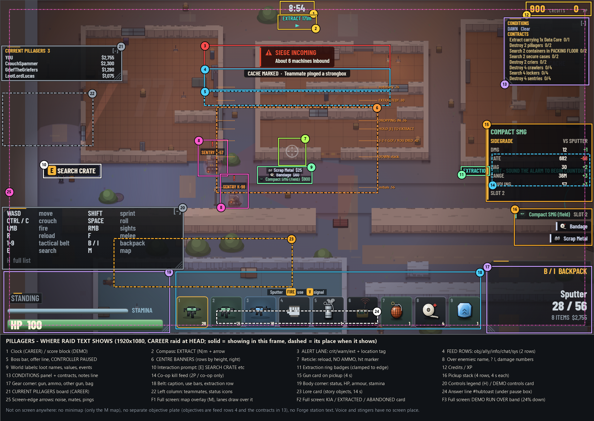

Read-only list from the code at HEAD v24.90, 2026-10-12. It covers DEMO and CAREER, from the drop until the KIA, EXTRACTED or RUN OVER card closes. Placeholders: {N} number, ${N} money, {NAME} name, {ITEM} item, {L} ring letter, {DIR} direction. Within each zone, the most common messages come first.

Screen map: screen-map.png in this folder, a real 1920x1080 CAREER frame (seed 4242, v24.89). A solid outline means the zone is showing in this frame. A dashed outline marks where the zone appears when it is up. Zone 6 marks each centre banner's row height. The demo items in the frame are staged, for example the feed row's teammate ping. On the right edge, from 46% to 60% down, three things can overlap: the ring badge (11), the gun card (15) and, in co-op, the kill feed (14). The unmarked frame is screen-map-raw.png.
CHANGING tags: goes the whole message is being removed by a queued build part goes part of it is being cut voice to noise the spoken clip becomes a noise and the text stays shipped the change is already in gone v24.90 no longer reached since v24.90 (a DEMO extraction now ends the run) your order one of tonight's orders covers it (not shipped yet). Nothing in the queue had shipped by v24.90 except the Overseer rename (v24.85).